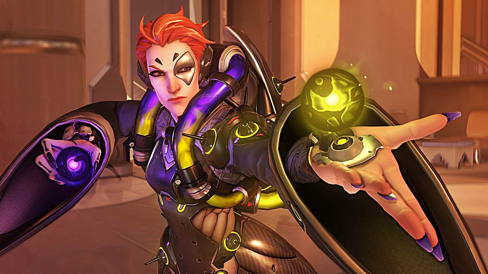
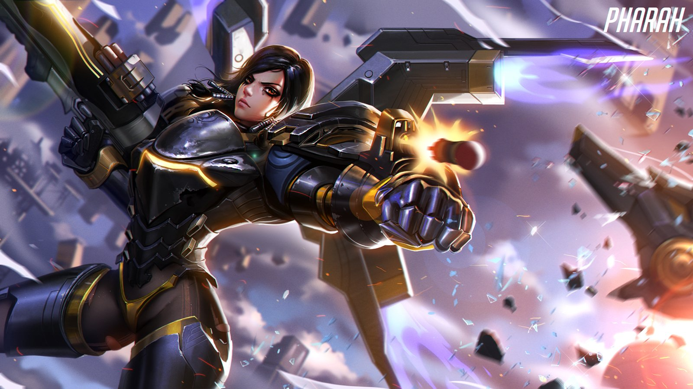
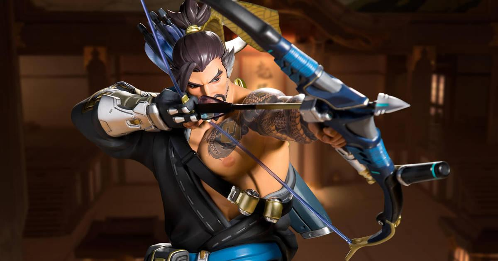
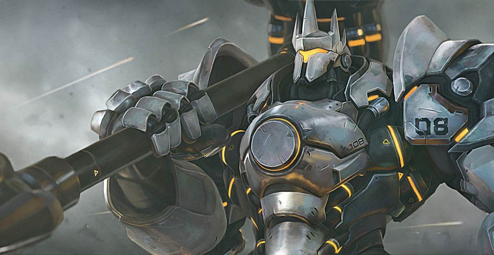
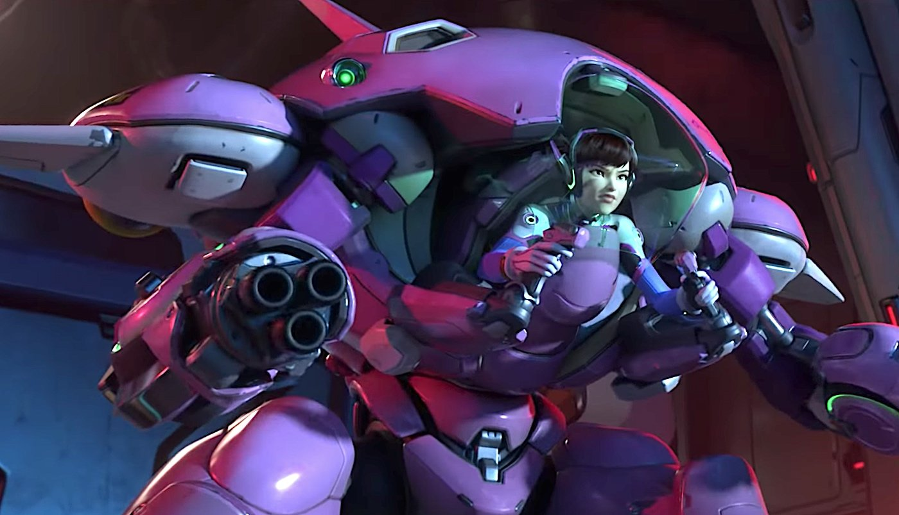

Overwatacas
Detox0

Jugador balanceado, formador del equipo, sus mejores personajes son: Reaper, Bastion, Dva, Zarya, Mercy. Main: Zenyatta, personaje con gran presencia en el campo de batalla, capaz de eliminar tanques y curar a todos con su trascendencia.
Mr. Gettys
Destacado jugador de Tanques y Curadores. Es el miembro de nuestro equipo con el ranking histórico más alto. Sus mejores personajes son: Orissa, Soldier 76, Dva, Lucio. Main: Moira, al igual que Zenyatta, su presencia en el juego es polifacética, teniendo más capacidad de sanación, su ultimate, cura y hace daño en un rango amplio.
Fábula del Mono
Ahora conocido como Eulalio, jugador retirado de PS4, actualmente juega en PC. Sus personajes destacados son principalmente de la categoría tanques, Reindhardt y Dva, sin embargo su main es un personaje de daño. Main: Pharah, personaje con daño en área además de poseer una característica única, puede volar. Puede desviar esfuerzos del enemigo al tratar de desechar la "superioridad áerea".
Gran Gesell
Sus personajes más utilizados son Zarya, Mercy, Pharah. Main: Hanzo, precisión para eliminar miembros más endebles del enemigo, pero con gran presencia como los sanadores.
Green Dragon
Motivador de jugar overwatch desde antes del estreno del juego, Jugador de Tanques y sanadores. Main: Reinhardt, habilidad como jugador de colarse en la espalda de los enemigos
Unda Unda

Jugador más nuevo del equipo, ocupa principalmente sanadores. Main: Brigitte, buscando su espacio como titular del equipo.
Genzetzu
Antes conocido como la Fábula del mono, jugador retirado de PS4, actualmente juega en PC. Sus personajes destacados son principalmente de la categoría tanques, Reindhardt y Dva, sin embargo su main es un personaje de daño. Main: Pharah, personaje con daño en área además de poseer una característica única, puede volar. Puede desviar esfuerzos del enemigo al tratar de desechar la "superioridad áerea".